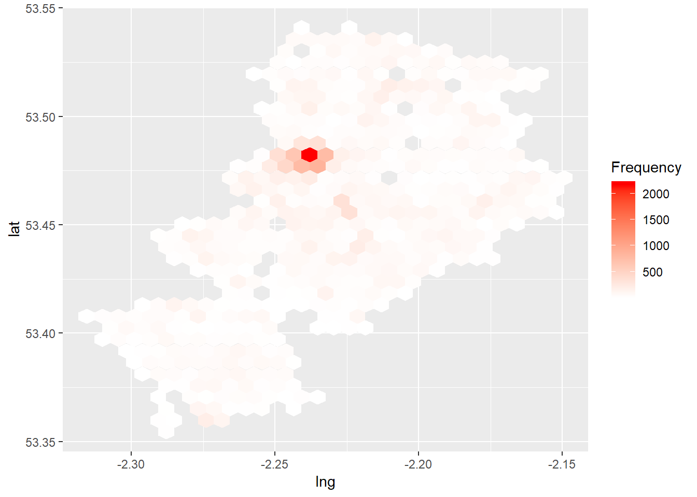
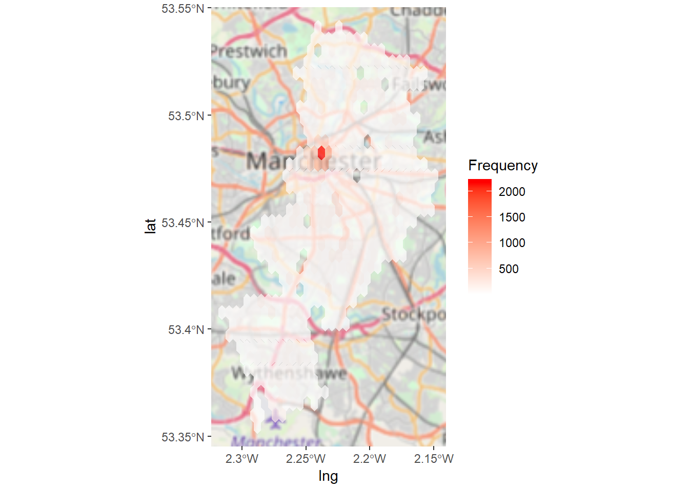
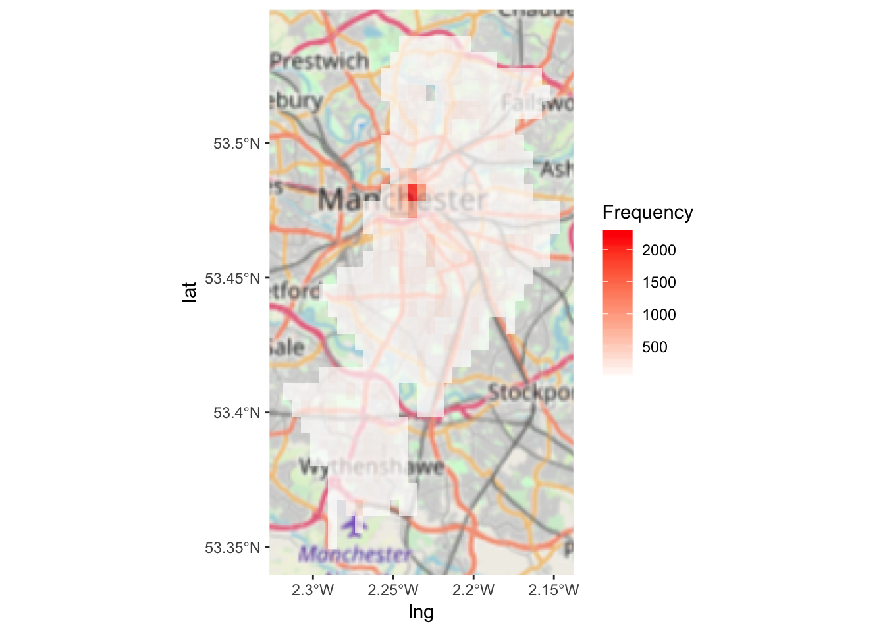
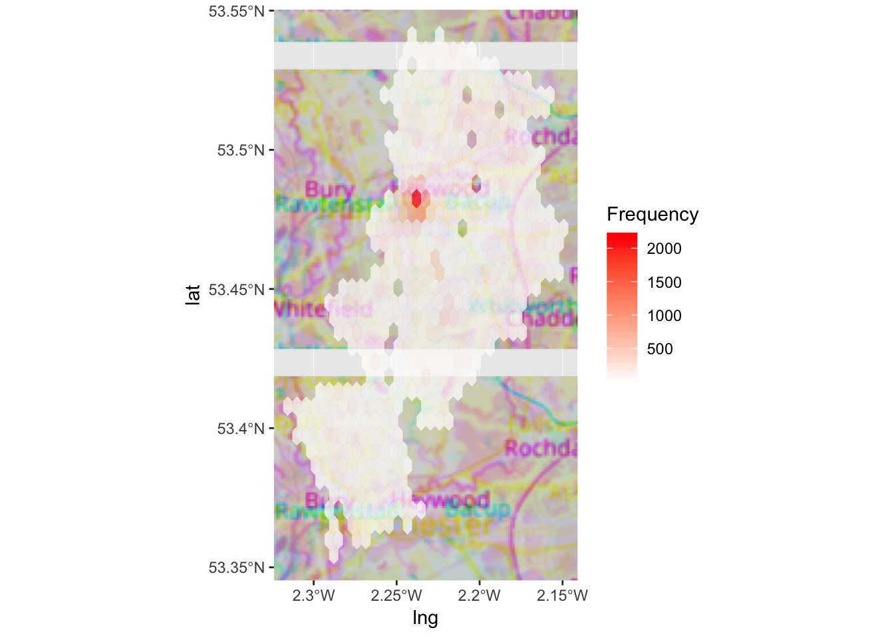
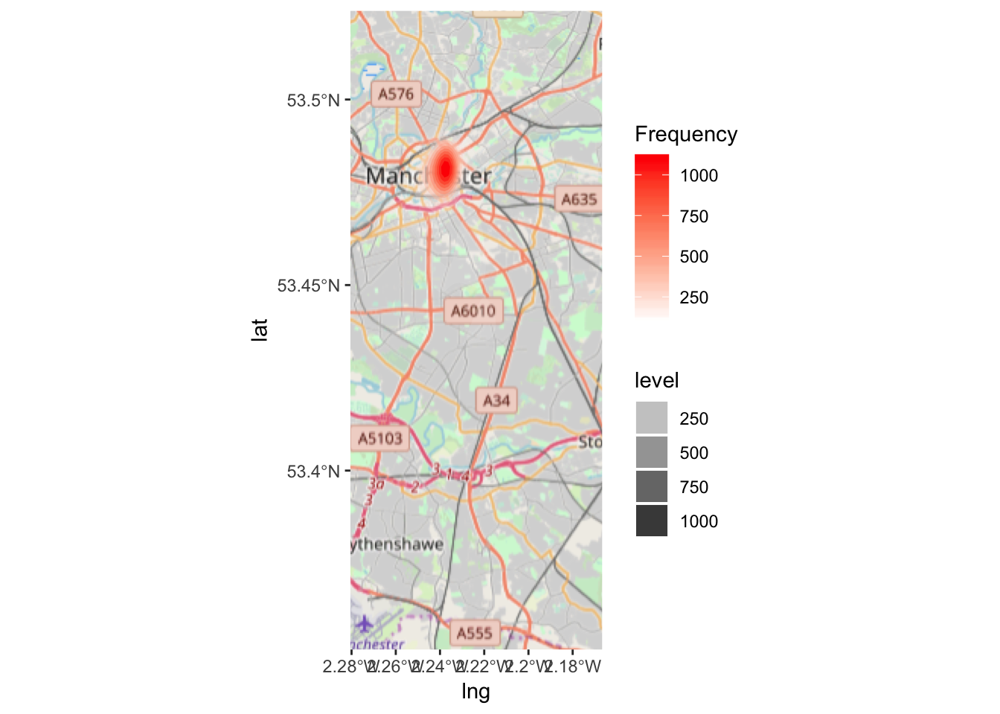
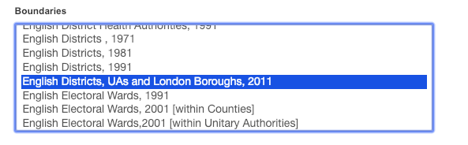
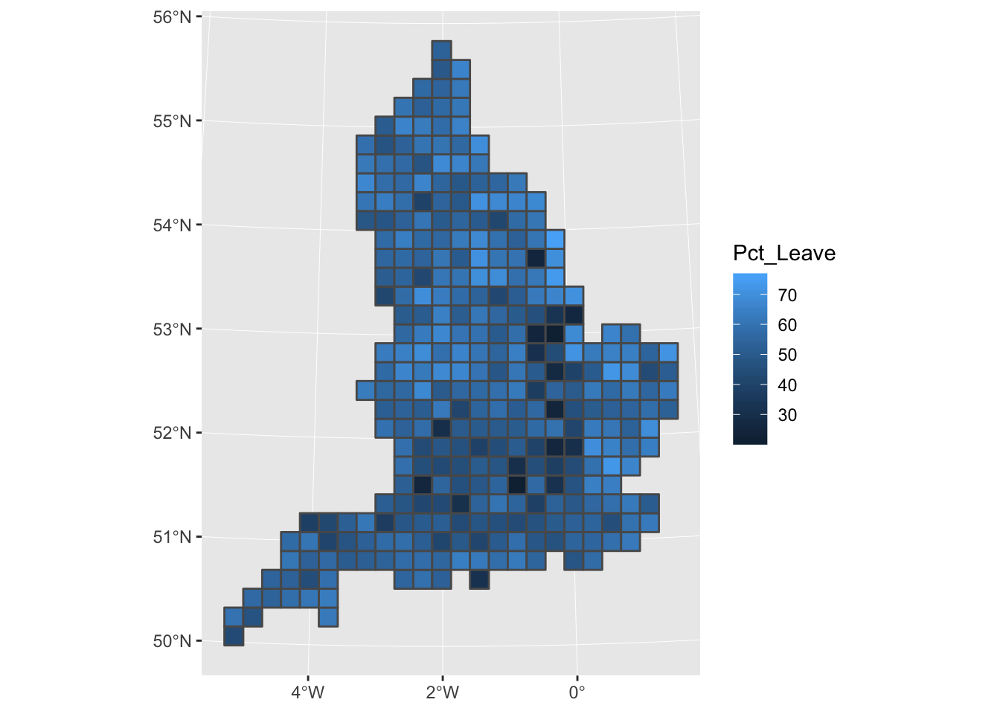
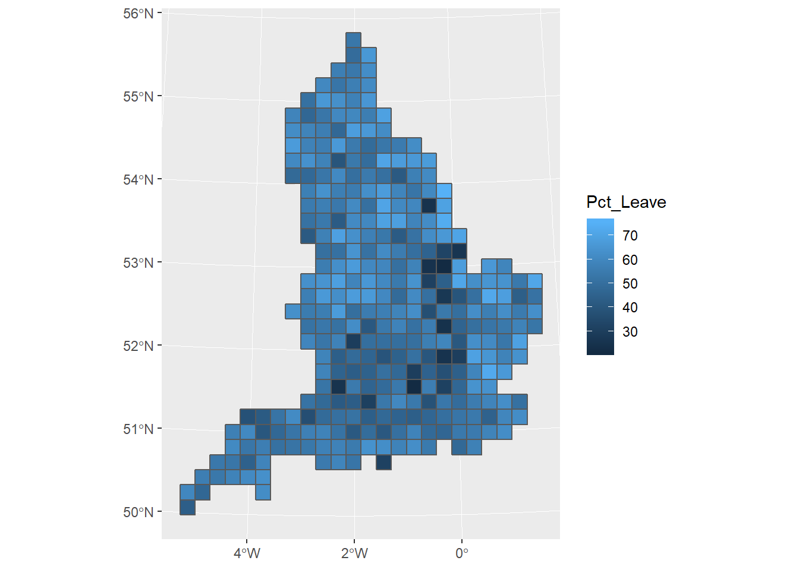
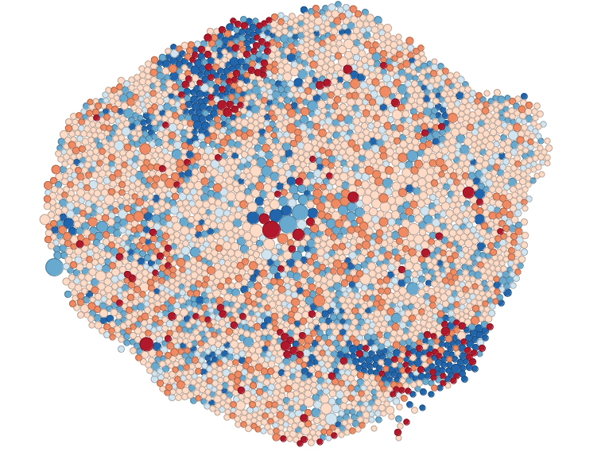
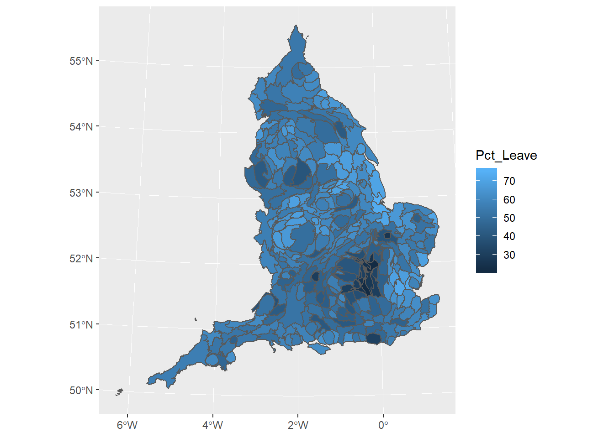

Chapter 5 More on thematic maps
5.1 Introduction
In this session we are going to discuss some additional features around thematic maps we did not cover in week 3. We are going to discuss how to address some of the problems we confront when we are trying to use use choropleth maps, as well as some alternatives to point based maps. We will also introduce the modifieable area unit problem.
Before we do any of this, we need to load the libraries we will use today:
library(sf)## Linking to GEOS 3.6.1, GDAL 2.1.3, PROJ 4.9.3library(tmap)
library(sp)
library(spdep)## Loading required package: Matrix## Loading required package: spData## To access larger datasets in this package, install the spDataLarge
## package with: `install.packages('spDataLarge',
## repos='https://nowosad.github.io/drat/', type='source'))`library(DCluster)## Loading required package: boot## Loading required package: MASSlibrary(cartogram)
library(ggmap)## Loading required package: ggplot2library(ggplot2)
library(dplyr)##
## Attaching package: 'dplyr'## The following object is masked from 'package:MASS':
##
## select## The following objects are masked from 'package:stats':
##
## filter, lag## The following objects are masked from 'package:base':
##
## intersect, setdiff, setequal, unionThere are also some new libraries we will use. If you don’t already have these you will need to install them.
5.1.1 Pro-tip: do I need to install this package?
You might have noticed that in your list of available packages you might see more than you remember downloading. The idea of dependencies has come up throughout the semester. Packages have dependencies when their code is dependent on (uses code from) another package. For example, if I write some code that I think will be useful, so I release this in the form of the package “rekaR”, but I use ggplot2 in the code, then ggplot2 will be a dependency of rekaR. As a default, R will install all the dependencies for a package when you install your package. So this way you might end up with some packages there that you didn’t realise you had.
Why am I telling you this? Well you should always check if you have a package, before installing it. And I wanted to share with you some neat code from a Stackoverflow discussion (if you are not yet familiar with Stackoverflow you have not been Google-ing your error messages enough) here to do this. I’ll comment it a bit, so you can follow along what it does but you don’t have to if you don’t want to. This is just an optional extra.
So as a first step, you have to assign a list of all the packages you have to check to an object. Let’s say I tell you that today we will be using the following packaes: “sp”, “rgdal”, “classInt”, “RColorBrewer”, “ggplot2”, “hexbin”, “ggmap”, “XML”, and “dplyr”. Then you can add these to an object called libs, using the c() function:
libs <- c("sf", "tmap", "sp", "spdep", "DCluster", "cartogram")Now you can run the below bit of code, and you will see in the console an output of what is and isn’t installed, as well as install the packages that are not!
for (x in libs){ #cycle through each item in libs object
if(x %in% rownames(installed.packages()) == FALSE) { #if the package is not installed
print(paste0("installing ", x, "...")) #print a message to tell me
install.packages(x) #and then install the packages
}
else{ #otherwise (if it is installed)
print (paste0(x, " is already installed ")) #print a message to tell me
}
library(x, character.only = TRUE) #and then load the packages
}## [1] "sf is already installed "
## [1] "tmap is already installed "
## [1] "sp is already installed "
## [1] "spdep is already installed "
## [1] "DCluster is already installed "
## [1] "cartogram is already installed "As you can see if you read through the comments there, this bit of code checks each package in the list you pass to tbe libs object when you create it, and if it is not installed it installs for you, and if it is, it just loads it for you. It can be a handy bit of code to keep around.
5.1.2 Data
Then we will bring back data about homicide across US counties. Some of you that have taken previous classes with us may be familiar with this dataset. The dataset was used as the basis for this study. We will be using it also later on in the semester. It contains data on homicide counts and rates for various decades across the US as well as information on structural factors often thought to be associated with violence.
##R in Windows have some problems with https addresses, that's why we need to do this first:
urlfile<-'https://s3.amazonaws.com/geoda/data/ncovr.zip'
download.file(urlfile, 'ncovr.zip')
#Let's unzip and create a new directory (ncovr) in our working directory to place the files
unzip('ncovr.zip', exdir = 'ncovr')Remember that to treat the data as spatial we need to load the shapefile. With that we can create a spatial object:
shp_name <- "ncovr/ncovr/NAT.shp"
ncovr_sf <- st_read(shp_name)## Reading layer `NAT' from data source `/Users/reka/Dropbox (The University of Manchester)/crimemapping_textbook_bookdown/ncovr/ncovr/NAT.shp' using driver `ESRI Shapefile'
## Simple feature collection with 3085 features and 69 fields
## geometry type: MULTIPOLYGON
## dimension: XY
## bbox: xmin: -124.7314 ymin: 24.95597 xmax: -66.96985 ymax: 49.37173
## epsg (SRID): 4326
## proj4string: +proj=longlat +datum=WGS84 +no_defs5.2 Mapping rates, learning from disease mapping
In previous sessions we discussed how to map rates. It seems a fairly straightoforward issue, you calculate a rate by dividing your numerator (eg: number of crimes) by your demoninator (eg: daytime population). You get your variable with the relevant rate and you map it using a choropleth map. However, things are not always that simple. Rates are funny animals. Let’s look at the ncvor data.
summary(ncovr_sf$HR60)## Min. 1st Qu. Median Mean 3rd Qu. Max.
## 0.000 0.000 2.783 4.504 6.885 92.937We can see that the county with the highest homicide rate in the 1960s had a rate of 92.937 homicides per 100,000 individuals. That is very high. Just to put it into context in the UK is about 0.92. Where is that place? I can tell you is a place call Borden. Check it out:
borden <- subset(ncovr_sf, NAME == "Borden")
borden$HR60## [1] 92.9368Borden county in Texas. You may be thinking… “Texas Chainsaw Massacre” perhaps? No, not really. Ed Gein, who inspired the film, was based and operated in Wisconsin. Borden claim to fame is that it was named after Gail Borden, the inventor of condensed milk. So, what’s going on here? Why do we have a homicide rate in Borden that makes it look like a war zone or the setting for Midsomer Murders? Is is that it is only one of the six counties where alcohol is banned in Texas (and people are consequently going nuts?).
Check this out too:
borden$HC60## [1] 1What? A total homicide count of 1. How can a county with just one homicide have a rate that makes it look like the most dangerous place in the US?
borden$PO60## [1] 1076Well, there were about 1076 people living there.
summary(ncovr_sf$PO60)## Min. 1st Qu. Median Mean 3rd Qu. Max.
## 208 9417 18408 57845 39165 7781984If you contrast that with the average county in the US, that’s tiny. One homicide in such a small place can end up producing a big rate. Remember that the rate is simply dividing the number of relevant events by the exposure variable (in this case population) and multiplying by a constant (in this case 100,000 since we expressed crime rates in those terms). Most times Borden is a very peaceful place:
borden$HR70## [1] 0borden$HR80## [1] 0borden$HR90## [1] 0It has a homicide rate of 0 in most decades. But it only takes one homicide and, bang, it goes top of the league. So a standard map of rates is bound to be noisy. There is the instability that is introduced by virtue of having areas that may be sparsely populated and in which one single event, like in this case, will produce a very noticeable change in the rate. In fact, if you look at the counties with the highest homicide rate in the ncovr dataset you will notice all of them are places like Borden, areas that are sparsely populated, not because they are that dangerous, but because of the instability of rates.
This is a problem that was first noted by epidemiologists doing disease mapping. But a number of other disciplines have now noted this and used some of the approaches developed by public health researchers that confronted this problem when producing maps of disease (PRO TIP: techniques and approaches used by spatial epidemiologists are very similar to those used by criminologists -in case you ever think of changing careers or need inspiration for how to solve a crime analysis problem).
One way of dealing with this is by smoothing the rates. This basically as the word implies aims for a smoother representation that avoids hard spikes associated with random noise. There are different ways of doing that. Some ways use a non-spatial approach to smoothing, using something called a empirical bayesian smoother. How does this work? This approach takes the raw rates and tries to “shrunk” them towards the overall average. What does this mean? Essentially, we compute a weighted average between the raw rate for each area and the global average across all areas, with weights proportional to the underlying population at risk. What this procedure does is to have the rates of smaller areas (those with a small population at risk) to have their rates adjusted considerably (brought closer to the global average), whereas the rates for the larger areas will barely change.
Here we are going to introduce the approach implemented in DCluster, a package developed for epidemiological research and detection of clusters of disease.
res <- empbaysmooth(ncovr_sf$HC60, ncovr_sf$PO60)In the new object we generate, which is a list, you have an element which contains the computed rates. We can add those to our dataset:
ncovr_sf$HR60EBS <- res$smthrr * 100000Instead of shrinking to the global rate, we can shrink to a rate based on the neighbours of each county. If instead of shrinking to a global rate, we shrink to a local rate, we may be able to take unobserved heterogeneity into account; for this we need the list of neighbours (we will discuss this code in a later session, so for now just trust us we are computing the rate of the areas that surround each country):
ncovr_sp <- as(ncovr_sf, "Spatial")
w_nb <- poly2nb(ncovr_sp, row.names=ncovr_sp$FIPSNO)
eb2 <- EBlocal(ncovr_sf$HC60, ncovr_sf$PO60, w_nb)
ncovr_sf$HR60EBSL <- eb2$est * 100000We can now plot the maps and compare them:
current_style <- tmap_style("col_blind")## tmap style set to "col_blind"## other available styles are: "white", "gray", "natural", "cobalt", "albatross", "beaver", "bw", "classic", "watercolor"map1<- tm_shape(ncovr_sf) +
tm_fill("HR60", style="quantile", title = "Raw rate", palette = "Reds") +
tm_layout(legend.position = c("left", "bottom"),
legend.title.size = 0.8,
legend.text.size = 0.5)
map2<- tm_shape(ncovr_sf) +
tm_fill("HR60EBS", style="quantile", title = "EB Smooth", palette = "Reds") +
tm_layout(legend.position = c("left", "bottom"),
legend.title.size = 0.8,
legend.text.size = 0.5)
map3<- tm_shape(ncovr_sf) +
tm_fill("HR60EBSL", style="quantile", title = "Local Smooth", palette = "Reds") +
tm_layout(legend.position = c("left", "bottom"),
legend.title.size = 0.8,
legend.text.size = 0.5)
tmap_arrange(map1, map2, map3) 
Notice that the quantiles are not the same, so that will make your comparison difficult.
5.3 Binning points
In GIS it is often difficult to present point-based data because in many instances there are several different points and data symbologies that need to be shown. As the number of different data points grows they can become complicated to interpret and manage which can result in convoluted and sometimes inaccurate maps. This becomes an even larger problem in web maps that are able to be depicted at different scales because smaller scale maps need to show more area and more data. This makes the maps convoluted if multiple data points are included.
In many maps there are so many data points included that little can be interpreted from them. In order to reduce congestion on maps many GIS users and cartographers have turned to a process known as binning.
Binning is defined as the process of grouping pairs of locations based on their distance from one another. These points can then be grouped as categories to make less complex and more meaningful maps.
Researchers and practitioners often require a way to systematically divide a region into equal-sized portions. As well as making maps with many points easier to read, binning data into regions can help identify spatial influence of neighbourhoods, and can be an essential step in developing systematic sampling designs.
This approach to binning generates an array of repeating shapes over a user-specified area. These shapes can be hexagons, squares, rectangles, triangles, circles or points, and they can be generated with any directional orientation.

5.3.1 The Binning Process
Binning is a data modification technique that changes the way data is shown at small scales. It is done in the pre-processing stage of data analysis to convert the original data values into a range of small intervals, known as a bin. These bins are then replaced by a value that is representative of the interval to reduce the number of data points.
Spatial binning (also called spatial discretization) discretizes the location values into a small number of groups associated with geographical areas or shapes. The assignment of a location to a group can be done by any of the following methods: - Using the coordinates of the point to identify which “bin” it belongs to. - Using a common variable in the attribute table of the bin and the point layers.
5.3.2 Different Binning Techniques
Binning itself is a general term used to describe the grouping of a dataset’s values into smaller groups (Johnson, 2011). The bins can be based on a variety of factors and attributes such as spatial and temporal and can thus be used for many different projects.
5.3.2.1 Choropleth maps
You might be thinkging, “grouping points into a larger spatial unit, haven’t we already done this when making choropleth maps?”. In a way you are right. Choropleth maps are another type of map to that uses binning. Proportional symbol and choropleth maps group similar data points together to show a range of data instead of many individual points. We’ve covered this extensively, and is generally the best approch to consider spatial grouping of your point variables, because the polygons (shapes) to which you are aggregating your points are meaningful. You can group into LSOAs because you want to show variation in neighbourhoods. Or you can group into police force areas because you want to look at differences between those units of analysis. But sometimes there is just not a geography present to meet your needs.
Let’s say you are conducting some days of action in Manchester city centre, focusing on antisocial behaviour. You are going to put up some information booths and staff them with officers to engage with the local population about antiscoail behaviour. For these to be most effective, as an analyst you decide that they should go into the areas with the highest count of antisocial beaviour. You want to be very specific about where you put these as well, and so LSOA level would be too broad, you want to zoom in more. One approach can be to split central Manchester into some smaller polygons, and just calculate the number of antisocial behaviour incidents recorded in each. That way you can then decide to put your information booths somewhere inside the top 5 highest count bins.
5.3.2.2 Rectangular binning
The aggregation of incident point data to regularly shaped grids is used for many reasons such as normalizing geography for mapping or to mitigate the issues of using irregularly shaped polygons created arbitrarily (such as county boundaries or block groups that have been created from a political process). Regularly shaped grids can only be comprised of equilateral triangles, squares, or hexagons, as these three polygon shapes are the only three that can tessellate (repeating the same shape over and over again, edge to edge, to cover an area without gaps or overlaps) to create an evenly spaced grid.
Rectangular binning is the simplest binning method and as such it heavily used. However, there are some reasons why rectangular bins are less preferable over hexagonal bins. Before we cover this, let’s have a look at hexagonal bins.
5.3.2.3 Hexagonal binning
In many applications binning is done using a technique called hexagonal binning. This technique uses hexagon shapes to create a grid of points and develops a spatial histogram that shows different data points as a range or group of pairs with common distances and directions. In hexagonal binning the number of points falling within a particular rectangular or hexagon in a gridded surface is what makes the different colors to easily visualize data (Smith, 2012). Hexagonnal binning was first developed in 1987 and today “hexbinning” is conducted by laying a hexagonal grid on top of 2-dimensional data (Johnson, 2011). Once this is done users can conduct data point counts to determine the number of points for each hexagon (Johnson, 2011). The bins are then symbolized differently to show meaningful patterns in the data.
So how can we use hexbinning to solve our antisocial behaviour days of action task? Well let’s say we split Manchester city centre into hexagons, and count the number of antisocial behaviour instances in these. We can then identify the top hexagons, and locate our booths somewhere within these.
First make sure you have the appropriate packages loaded:
library(ggplot2)
library(ggmap)
library(hexbin)Also let’s get some data. You could go and get this data yourself from police.uk, we’ve been through all the steps for downloading data from there a few times now. But for now, I have a tidied set of data ready for you. This data is one year’s worth of antisocial behaviour from the police.uk data, from May 2016 to May 2017, for the borough of Manchester.
We can take our GMP crimes data, and select only the cases from ASB using the crime.type variable. If you want, however, I have already done this, so you can also download from my dropbox using the link here:
manchester_asb <- read.csv("https://www.dropbox.com/s/4tk0aps3jfd9nh4/manchester_asb.csv?dl=1")This is currently just a text dataframe, so we need to let R know that actually this is a spatial object, who’s geometry can be find in its longitude and latitude coordinates. As we have long/lat we can assure it’s in WGS 84 projection.
ma_spatial <- st_as_sf(manchester_asb, coords = c("Longitude", "Latitude"),
crs = 4326, agr = "constant")Now one thing that this does is it consumes our Long and Lat columnsinto a geometry attribute. This is generally OK, but for the binning we will do, we would like to have them as separate coordinates. To do this, we can use a bespoke function, sfc_as_cols() created by Josh M. London in response to this issue opened on github for the sf package. To create this function here, run the below code:
sfc_as_cols <- function(x, names = c("x","y")) {
stopifnot(inherits(x,"sf") && inherits(sf::st_geometry(x),"sfc_POINT"))
ret <- sf::st_coordinates(x)
ret <- tibble::as_tibble(ret)
stopifnot(length(names) == ncol(ret))
x <- x[ , !names(x) %in% names]
ret <- setNames(ret,names)
dplyr::bind_cols(x,ret)
}As we are not covering making your own function much here, don’t worry too much about the above code, but if you’re curious, raise your hand in the labs and we can come around and talk through it.
Now finally, let’s use this function we just created to extract the coords to some columns. So in this function, we have to pass as parameters the name of the dataframe, ma_spatial in our case, and also what we want the columnd to be called in a concatenated list (created with the c() function). Let’s call these “lng” and “lat”:
ma_spatial <- sfc_as_cols(ma_spatial, c("lng", "lat"))As a first step, we can plot asb in the borough of Manchester using simple ggplot! Remember the data visualisation session from weeks ago? We discussed how ggplot is such a great tool for building visualisations, because you can apply whatever geometry best suits your data. So for us to just have a look at the hexbinned version of our point data of antisocial behaviour, we can use the stat_binhex() function. We can also recreate the thematic map element, as we can use the frequency of points in each hex to shade each hexbin from white (least number of incidents) to red (most nuber of incidents).
So let’s have a go:
ggplot(ma_spatial, aes(lng, lat)) + #define data and variables for x and y axes
stat_binhex() + #add binhex layer (hexbin)
scale_fill_gradientn(colours = c("white","red"), name = "Frequency") #add shading based on number of ASB incidents
Neat, but doesn’t quite tell us where that really dark hexbon actually is. So it would be much better if we could do this with a basemap as the backrgound, rather than our grey ggplot theme.
Now, we can apply the same code as we used above, for the ggplot, to this ggmap, to add our hexbins on top of this basemap:
library(ggspatial) #load ggspatial package for background map tiles
ggplot(ma_spatial, aes(x = lng, y = lat)) +
annotation_map_tile() +
stat_binhex(alpha=0.7) + #add binhex layer (hexbin)
scale_fill_gradientn(colours = c("white","red"), name = "Frequency") #add shading based on number of ASB incidents ## Zoom: 10
Now this should give you some more context! Woo!
So I mentioned we’d go over some reasons why you should consider aggregating into a hexagon grid rather than other shape:
- Hexagons reduce sampling bias due to edge effects of the grid shape. The edge effects of bounded space refers to the problem of truncated data that can skew the results of subsequent analyses (we’ll get to this in the next section). This is related to the low perimeter-to-area ratio of the shape of the hexagon. A circle has the lowest ratio but cannot tessellate to form a continuous grid. Hexagons are the most circular-shaped polygon that can tessellate to form an evenly spaced grid.
- This circularity of a hexagon grid allows it to represent curves in the patterns of your data more naturally than square grids.
- When comparing polygons with equal areas, the more similar to a circle the polygon is, the closer to the centroid the points near the border are (especially points near the vertices). This means that any point inside a hexagon is closer to the centroid of the hexagon than any given point in an equal-area square or triangle would be (this is due to the more acute angles of the square and triangle versus the hexagon).
- Hexagons are preferable when your analysis includes aspects of connectivity or movement paths. Due to the linear nature of rectangles, fishnet grids can draw our eyes to the straight, unbroken, parallel lines which may inhibit the underlying patterns in the data. Hexagons tend to break up the lines and allow any curvature of the patterns in the data to be seen more clearly and easily. This breakup of artificial linear patterns also diminishes any orientation bias that can be perceived in fishnet grids.
- If you are working over a large area, a hexagon grid will suffer less distortion due to the curvature of the earth than the shape of a fishnet grid.
- Finding neighbors is more straightforward with a hexagon grid. Since the edge or length of contact is the same on each side, the centroid of each neighbor is equidistant. However, with a fishnet grid, the Queen’s Case (above/below/right/left) neighbor’s centroids are N units away, while the centroids of the diagonal (Rook) neighbors are farther away (exactly the square root of 2 times N units away).
- Since the distance between centroids is the same in all six directions with hexagons, if you are using a distance band to find neighbors or are using the Optimized Hot Spot Analysis, Optimized Outlier Analysis or Create Space Time Cube By Aggregating Points tools, you will have more neighbors included in the calculations for each feature if you are using hexagonal grid as opposed to a fishnet grid.

Now, to again illustrate the differences of different approaches, let’s see what this map would look like with:
- rectangular binning:
ggplot(ma_spatial, aes(x = lng, y = lat)) +
annotation_map_tile() +
stat_bin2d(alpha=0.7) +
scale_fill_gradientn(colours = c("white","red"),
name = "Frequency") ## Zoom: 10
- hexagonal binning:
ggplot(ma_spatial, aes(x = lng, y = lat)) +
annotation_map_tile() +
stat_binhex(alpha=0.7) +
scale_fill_gradientn(colours = c("white","red"),
name = "Frequency")## Zoom: 10
- a simple “heatmap” (we will discuss these more thoroughly next week):
ggplot(ma_spatial, aes(x = lng, y = lat)) +
annotation_map_tile() +
stat_density2d(aes(fill = ..level.., # value corresponding to discretized density estimates
alpha = ..level..),
geom = "polygon") + # creates the bands of differenc colors
## Configure the colors, transparency and panel
scale_fill_gradientn(colours = c("white","red"),
name = "Frequency") ## Zoom: 11
5.3.3 Homework 5.1
Look at the difference between the three maps (hex, rectangle, and density). How would your conclusions change if you were given these maps? Would you make different decisions about where to place your booths for the days of action? Why or why not? Discuss.
5.3.4 Multivariate binning
Multivariate binning is another binning method that lets you visualise slightly more complex data. In this method there can be many different variables consisting of different types of data. Like other binning methods the data is typically grouped with the sum or average of the data. Different types of symbology (such as size, shape and color) can also be used to represent this data as well.
We won’t be covering this here but just so you can have a look at some examples here.
5.3.5 Benefits of Binning
Because of the plethora of data types available and the wide variety of projects being done in GIS, binning is a popular method for mapping complex data and making it meaningful. Binning is a good option for map makers as well as users because it makes data easy to understand and it can be both static and interactive on many different map scales. If every different point were shown on a map it would have to be a very large scale map to ensure that the data points did not overlap and were easily understood by people using the maps.
According to Kenneth Field, an Esri Research Cartographer, “Data binning is a great alternative for mapping large point-based data sets which allows us to tell a better story without interpolation. Binning is a way of converting point-based data into a regular grid of polygons so that each polygon represents the aggregation of points that fall within it.”
By using binning to create categories of data maps are easier to understand, more accurate and more visually appealing.
Hexbin plots can be viewed as an alternative to scatter plots. The hexagon-shaped bins were introduced to plot densely packed sunflower plots. They can be used to plot scatter plots with high-density data.
5.4 A note of caution: MAUP
Now that we’ve shown you how to do a lot of spatial crime analysis, we wanted to close with some words of caution. Remember that everything you’ve learned here are just tools that you will be applying to data you are working with, but it’s up to you, the researcher, the analyst, the domain expert, to apply and use these with careful consideration and cautions. This discussion is very much part of spatial crime analysis, and an important field of thought.
I borrow here from George Renghert and Brian Lockwood:
When spatial analysis of crime is conducted, the analyst should not ignore the spatial units that data are aggregated into and the impact of this choice on the interpretation of findings. Just as several independent variables are considered to determine whether they have statistical significance, a consideration of multiple spatial units of analysis should be made as well, in order to determine whether the choice of aggregation level used in a spatial analysis can result in biased findings.
In particular, they highlight four main issues inherent in most studies of space: - issues associated with politically bounded units of aggregation, - edge effects of bounded space - the modifiable aerial unit problem (MAUP) - and ways in which the results of statistical analyses can be manipulated by changes in the level of aggregation.
In this lab we will focus on MAUP, but if you are interested in this kind of work, you should definitely read their paper to consider the other issues as well. There are techniques that can be used to alleviate each of the methodological difficulties, and they are described in accessible detail in their paper: Rengert, George F., and Brian Lockwood. “Geographical units of analysis and the analysis of crime.” Putting crime in its place. Springer, New York, NY, 2009. 109-122.
5.4.1 What is MAUP?
The Modifiable Areal Unit Problem (MAUP) is an important issue for those who conduct spatial analysis using units of analysis at aggregations higher than incident level. It is one of the better-known problems in geography and spatial analysis. This phenomenon illustrates both the need for considering space in one’s analysis, and the fundamental uncertainties that accompany real-world analysis.
The MAUP is "a problem arising from the imposition of artificial units of spatial reporting on continuous geographical phenomena, leading to artifacts or errors are created when one groups data into units for analysis.
The classic text on MAUP is the 1983 paper Openshaw, Stan. “The modifiable areal unit problem. CATMOG (Concepts and techniques in modern geography) 38.” Geo Abstracts, Norwich. 1984..
There are two distinct types of MAUP: Scale (i.e. determining the appropriate size of units for aggregation) and zone (i.e. drawing boundaries or grouping).
5.4.1.1 Scale
The scale problem involves results that change based on data that are analyzed at higher or lower levels of aggregation (Changing the number of units). For example, evaluating data at the state level vs. Census tract level.
The scale problem has moved to the forefront of geographical criminology as a result of the recent interest in small-scale geographical units of analysis. It has been suggested that smaller is better since small areas can be directly perceived by individuals and are likely to be more homogenous than larger areas. - Gerell, Manne. “Smallest is better? The spatial distribution of arson and the modifiable areal unit problem.” Journal of quantitative criminology 33.2 (2017): 293-318.
5.4.1.2 Zone
The zonal problem involves keeping the same scale of research (say, at the state level) but changing the actual shape and size of those areas.
The basic issue with the MAUP is that aggregate units of analysis are often arbitrarily produced by whom ever is in charge of creating the aggregate units. A classic example of this problem is known as Gerrymandering. Gerrymandering involves shaping and re-shaping voting districts based on the political affiliations of the resident citizenry.
The inherent problem with the MAUP and with situations such as Gerrymandering is that units of analysis are not based on geographic principles, and instead are based on political and social biases. For researchers and practitioners the MAUP has very important implications for research findings because it is possible that as arbitrarily defined units of analysis change shape findings based on these units will change as well.
When spatial data are derived from counting or averaging data within areal units, the form of those areal units affects the data recorded, and any statistical measures derived from the data. Modifying the areal units therefore changes the data. Two effects are involved: a zoning effect arising from the particular choice of areas at a given scale; and an aggregation effect arising from the extent to which data are aggregated over smaller or larger areas. The modifiable areal unit problem arises in part from edge effect.
If you’re interested, in particular about politics and voting, you can read this interesting piece to learn more about gerrymandering
5.4.2 Why does MAUP matter?
The practical implications of MAUP are immense for almost all decision-making processes involving GIS technology, since with the availability of aggregated maps, policy could easily focus on issues and problems which might look different if the aggregation scheme used were changed .
All studies based on geographical areas are susceptible to MAUP. The implications of the MAUP affect potentially any area level data, whether direct measures or complex model-based estimates. Here are a few examples of situations where the MAUP is expected to make a difference:
- The special case of the ecological fallacy is always present when Census area data are used to formulate and evaluate policies that address problems at individual level, such as deprivation. Also, it is recognised that a potential source of error in the analysis of Census data is ‘the arrangement of continuous space into defined regions for purposes of data reporting’
- The MAUP has an impact on indices derived from areal data, such as measures of segregation, which can change significantly as a result of using different geographical levels of analysis to derive composite measures .
- The choice of boundaries for reporting mortality ratios is not without consequences: when the areas are too small, the values estimated are unstable, while when the areas are too large, the values reported may be over-smoothed, i.e. meaningful variation may be lost .
- Gerell, Manne. “Smallest is better? The spatial distribution of arson and the modifiable areal unit problem.” Journal of quantitative criminology 33.2 (2017): 293-318.
5.4.3 What can we do?
Most often you will just have to remain aware of the MAUP and it’s possible effects. There are some techniques, that can help you address these issues, and the chapter pointed out at the beginning of this section is a great place to start to explore these. It is possible to use also an alternative, zone-free approach to mapping these crime patterns, perhaps by using kernel density estimation. Here we model the relative density of the points as a density surface - essentially a function of location (x,y) representing the relative likelihood of occurrence of an event at that point. We have covered KDE elsewhere in this course.
For the purposes of this course, it’s enough that you know of, and understand the MAUP and its implications. Always be smart when choosing your appropriate spatial unit of analysis, and when you use binning of any form, make sure you consider how and if your conclusions might change compared to another possible approach.
5.4.4 Homework 5.2
Look at the question for homework 5.1 about the three maps of binning and the hotspot map. Answer this question again, but now in light of what you have learned about MAUP.
5.5 Replacing polygons with grid or hex shapes
When you have meaningful spatial units of analysis in your polygons, for example you are interested specifically in Local Autorities, it might make sense to stick with what we did last week, and aggregate the points into these polygons to cheare thematic maps. However, while thematic maps are an accessible and visually appealing method for displaying spatial information, they can also be highly misleading. Irregularly shaped polygons and large differences in the size of areas being mapped can introduce misrepresentation. The message researchers want to get across might be lost, or even worse, misdirect the viewers to erroneous conclusions. This article provides a helpful discussion of the problem illustrating the case with UK election maps. It is worth reading.
Fortunately, there are many methods in R to enhance the legibility of geographic information and the interpretability of what it is trying to be communicated.
Broadly, the options are:
- cartogram
- hexmap
- grid
Selecting the appropriate method might depend on the research question being posed (e.g. clustering) and the data itself. Even once a method has been selected, there are different ways of operationalising them. We focus on methods for transforming our maps to hex and gridap. We make grid and hex maps where instead of creating a grid, we reshape the existing polygons into grid or hex shapes. We will also speak about cartograms, but I’ll leave that to the next section.
Let’s explore this using the example of the results of the 2016 EU referendum at Local Authority level, where remain areas clustered in London. A simple thematic map does not necessarily communicate this well because Local Authorities are both small and densely populated in London.
You can download the full set of EU referendum result data as a csv from the Electoral Commission webside. Let’s read it straight into R:
eu_ref <- read.csv("https://www.electoralcommission.org.uk/__data/assets/file/0014/212135/EU-referendum-result-data.csv")OKAY, now we need a shapefile to join it to. Remember when we got the Manchester lsoa shapefile with the boundary selector? Let’s go back, and this time get Local Authority Districts for England.
In this case that means select “English Districts, UAs and London Boroughs, 2011”:

Once you have the file, download, extract (unzip) and put the folder in your working directory. Mine is in a subfolder in my working directory called data, so I point R inside that folder to find my shape file.
las <- st_read("data/England_lad_2011_gen/england_lad_2011_gen.shp")## Reading layer `england_lad_2011_gen' from data source `/Users/reka/Dropbox (The University of Manchester)/crimemapping_textbook_bookdown/data/England_lad_2011_gen/england_lad_2011_gen.shp' using driver `ESRI Shapefile'
## Simple feature collection with 326 features and 4 fields
## geometry type: MULTIPOLYGON
## dimension: XY
## bbox: xmin: 82644.8 ymin: 5349.399 xmax: 655976.9 ymax: 657599.5
## epsg (SRID): NA
## proj4string: +proj=tmerc +lat_0=49 +lon_0=-2 +k=0.9996012717 +x_0=400000 +y_0=-100000 +datum=OSGB36 +units=m +no_defsWe can now join the EU referendum data, as we have learned in the past weeks:
eu_sf <- left_join(las, eu_ref, by = c("name" = "Area"))## Warning: Column `name`/`Area` joining factors with different levels,
## coercing to character vector#make sure we are in British National Grid Projection
eu_sf <- st_transform(eu_sf, 27700)Now we can have a look at these data:
ggplot() +
geom_sf(data = eu_sf, aes(fill = Pct_Leave)) 
We can see that in smaller LAs we don’t even really see the result, as the boundary lines pretty much cover everything. Hmm. Now what we can do is transform the shapes into squares of hexagons. Let’s have a go at squares.
We can use the functions in the geogrid package.
library(geogrid)Now we can use the calculate_grid() function. This function, given an input multipolgyon spatial data frame this function calculates a hexagonal or regular grid, that strives to preserve the original geography. Once this is done, we assign each polygon in the original file to a new location in the gridded geometry. NOTE THIS WILL TAKE A WHILE again this is something that is quite computationally intensive, so you set it running, and go for a short break. You need short breaks in coding.
However this particular bit of code will actually take about 10 minutes. So if you’re about to leave, wait until you are home to run it.
#first make our sf object into an sp object
eu_sp <- as(eu_sf, 'Spatial')
#then use the calculate_grid function. Note how we specify grid type to be "regular".
eu_reg <- calculate_grid(shape = eu_sp, grid_type = "regular", seed = 1)
#assign the polygons
eu_reg <- assign_polygons(eu_sp, eu_reg)
#now turn it back into sf object for easy ggplot plotting
eu_reg <- st_as_sf(eu_reg)While you’re waiting for that, you can have a read about how the polygons are assigned. The help file will tell you they use “the Hungarian algorithm”. This is from a paper called The Hungarian Method for the Assignment Problem by Harold W. Kuhn. Apparently, this method was so promising, that when Kuhn came across it referenced in a paper, even though the original paper is in Hungarian, Kuhn describes he “took out a Hungarian grammar and a large Hungarian-English dictionary and taught myself enough Hungarian to translate Egervary’s paper.” I can assure you, Hungarian is not an easy language to learn, so this must have been a most excellent theory to prompt such an act.
Now that your code has run, and you have your eu_reg shapefile, we can plot this!
ggplot() +
geom_sf(data = eu_reg, aes(fill = Pct_Leave)) 
Cool, eh?
5.5.1 Homework 5.3
Reproduce the above grid map using hexagons instead of squares.
5.6 Cartograms
The last thing we will do today is make some cartograms! Cartogram types of maps distort reality to convey information. They resize and exaggerate any variable on an attribute value.
There are different types of cartograms.
Density-equalizing (contiguous) cartograms are your traditional cartograms. In density-equalizing cartograms, map features bulge out a specific variable. Even though it distorts each feature, it remains connected during its creation. On the other hand, you can have Non-Contiguous Cartograms, where features in non-contiguous cartograms don’t have to stay connected. Finally, Dorling Cartogram (named after professor Danny Dorling) uses shapes like circles and rectangles to depict area. These types of cartograms make it easy to recognize patterns. For example, here is a Darling Cartogram I made of FixMyStreet reports in London:

Now we can make our own as well, using the cartogram package.
library(cartogram)Within that there is the cartogram() function, which takes 2 arguments, 1 - the shape file (it can be a SpatialPolygonDataFrame or an sf object), and 2 - the variable which it should use to distort the polygon by.
In our data set we have a variable “electorate” which refers to the total number of registered electors
# construct a cartogram using the percentage voting leave
eu_cartogram <- cartogram(eu_sf, "Electorate")Again this is some labour intensive work, much like the grid making, you have some time to chill now. Maybe read up on the maths behind this tranformation as well, in the paper Dougenik, J. A., Chrisman, N. R., & Niemeyer, D. R. (1985). An Algorithm To Construct Continuous Area Cartograms. In The Professional Geographer, 37(1), 75-81..
I do have a tip for you if you want to make sure the process does not take too long. You can set a parameter in the cartogram function which is the “itermax” parameter. This specifies the maximum number of iterations we are happy with. If you don’t specify it’s set to 15. Let’s set to 5 for the sake of speed:
# construct a cartogram using the percentage voting leave
eu_cartogram <- cartogram_cont(eu_sf, "Electorate", itermax = 5)## Mean size error for iteration 1: 4.11884641548982## Mean size error for iteration 2: 21.1096264523744## Mean size error for iteration 3: 3.05848955161026## Mean size error for iteration 4: 2.51480274961733## Mean size error for iteration 5: 2.92812677999131And if your cartogram has been created, you can now plot again the referendum results, but using the electorate to change the size of the locad authority:
ggplot() +
geom_sf(data = eu_cartogram, aes(fill = Pct_Leave)) 
We can now see London much better, and see that darker coloured cluster where much smaller percentage of people voted leave.
Okay that’s probably enough for the day. Nice work crime mappers!
5.7 References and further reading
5.7.1 Binning
- Johnson, Zachary Forest. (18 October 2011). “Hexbins!” Retrieved from: http://indiemaps.com/blog/2011/10/hexbins/ (8 August 2014).
- Smith, Nate. (25 May 2012). “Binning: An Alternative to Point Maps.” Mapbox. Retrieved from: https://www.mapbox.com/blog/binning-alternative-point-maps/ (8 August 2014).
- Claudia A Engel’s fantastic R-pub on Making Maps in R.
- Hexbin Graph Gallery
- US Drought Hexmap
- Hexbin with ggplot2
5.7.2 MAUP
- Gerell, Manne. “Smallest is better? The spatial distribution of arson and the modifiable areal unit problem.” Journal of quantitative criminology 33.2 (2017): 293-318.
- Openshaw, Stan. “The modifiable areal unit problem. CATMOG (Concepts and techniques in modern geography) 38.” Geo Abstracts, Norwich. 1984..
- Rengert, George F., and Brian Lockwood. “Geographical units of analysis and the analysis of crime.” Putting crime in its place. Springer, New York, NY, 2009. 109-122.
5.7.3 Transforming polygons
- Waldo Tobler (2004) Thirty Five Years of Computer Cartograms, Annals of the Association of American Geographers, 94:1, 58-73, DOI: 10.1111/j.1467-8306.2004.09401004.x
- Langton, S.H. & Solymosi, R. (2018) ‘Visualising geographic information: examining methods of improving the thematic map.’ RPubs. Available: https://rpubs.com/langton_/visual_geography_study